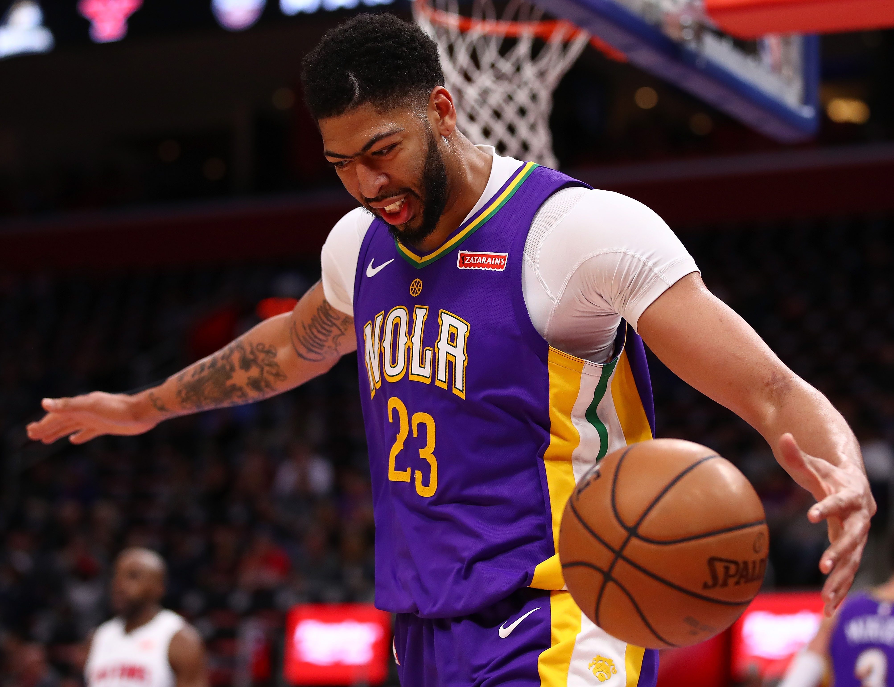
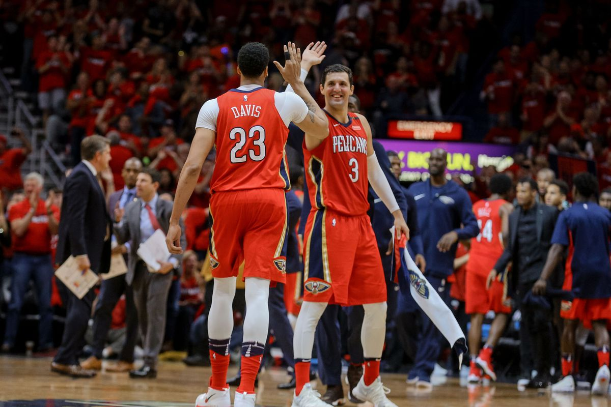
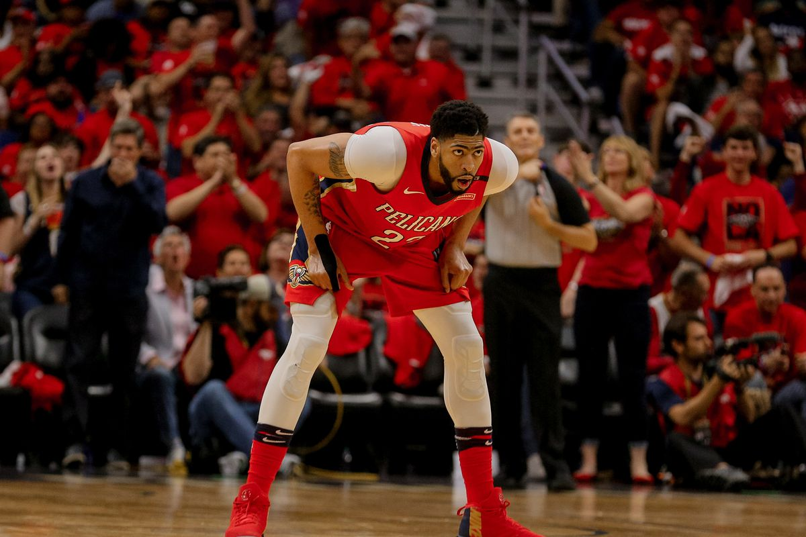

Profile Intro
Anthony Marshon Davis Jr. (born March 11, 1993) is an American professional basketball player for the Los Angeles Lakers of the National Basketball Association (NBA). He plays the power forward and center positions.
Davis was selected first overall in the 2012 NBA draft by New Orleans, is a six-time NBA All-Star, and has been named to three All-NBA First Teams and three NBA All-Defensive Teams. He also earned a gold medal playing with Team USA at the 2012 Summer Olympics. Davis played one season of college basketball for the University of Kentucky, when he was first team All-American and the Consensus National Player of the Year. He also won the USBWA National Freshman of the Year, NABC Defensive Player of the Year and the Pete Newell Big Man Award. Davis led the NCAA in blocks and set Southeastern Conference and NCAA Division I freshman single-season blocked shots records. He led Kentucky to a National Championship and was named Most Outstanding Player of the NCAA tournament. Davis left college for the NBA after one season and was drafted by the New Orleans Pelicans, then known as the New Orleans Hornets, and was selected that summer to play for the Team USA in the 2012 Olympics. After his rookie season, he was named to the NBA All-Rookie First Team. The next season, he became an All-Star for the first time and led the NBA in blocked shots per game. He has since become a six-time All-Star and the youngest player to score at least 59 points in an NBA game. In 2017, he was named the recipient of the NBA All-Star Game MVP Award after setting an All-Star Game scoring record of 52 points en route.
High School
Davis played high school basketball for the Perspectives Charter School who competed in the Blue Division (Chicago Public High School League) which he attended. Being a charter school with a primary focus on Math and Science with high academy pedigree, little attention was given to athletics. Davis and his friends practised basketball at a nearby church because his school didn’t have a gymnasium. Davis stood at a height of 6 feet 0 inches at the end of his freshman year. At the beginning of his sophomore year, he had added 1 more inch and finally ended the year at 6 feet 4 inches. His junior year saw him rise to 6 feet 7 inches at the onset and 6 feet 8 inches at the end of the year.
College Career
After less than one month of play, he was mentioned as a possible conference Player of the Year and National Player of the Year. He led the Wildcats to a perfect record of 16-0. The Kentucky Wildcats earned the number one overall seed in the 2012 NCAA Men’s Division I Basketball Tournament. Davis led the team to its eighth NCAA championship. He was named the 2012 Sporting News College Basketball Player of the Year, he won the U.S Basketball Writers Associations (USBWA) Robertson trophy while CBSSports.com named him their national player of the year. He also became the second freshman to win the Associated Press College Basketball Player of the Year. Davis also bagged the Naismith College Player of the Year. Davis was also named first-team All-American by the National Association of Basketball Coaches and also CBSSports.com first-team All-American. In the 2012 NCAA Tournament, Davis won the NCAA Basketball Tournament Most Outstanding Player and also was selected to the All-Tournament team, he was also named the USBWA National Freshman of the Year. The NABC Defensive Player of the Year award was also won by him.
Professional Career
Alongside the starting five of the national championship team, the Kentucky Wildcats, Davis declared for the 2012 NBA draft. The New Orleans Pelicans selected Davis as its first overall pick, making him the fifth Chicago-area first overall selection. Davis agreed to a three-year contract worth a guaranteed $16 million on July 24, 2012. Davis debuted for the Hornets on November 1, 2012, but was sidelined in subsequent games due to concussions, but returned to action after missing 11 games. In the 2013 NBA All-Star Game weekend, he played in the Rising Stars Challenge. Davis was a 2013 NBA All-Rookie First Team selection in his Rookie year, he was also the first runner-up in NBA Rookie of the Year voting. In his second year with the Hornets, he earned an NBA Player of the Week nomination that week but lost to Kevin Love. He was also a finalist for the Western Conference Player of the Week but lost out to Kevin Durant. During the 2014 NBA All-Star Game weekend, Davis competed in the Rising Star Challenge. He was picked to replace Kobe Bryant on February 7, in the 2014 All-Star Game, marking his first selection. Davis led the NBA in terms of blocks shots per game (2.82). Davis finished third in the NBA Most Improved Player Award.
